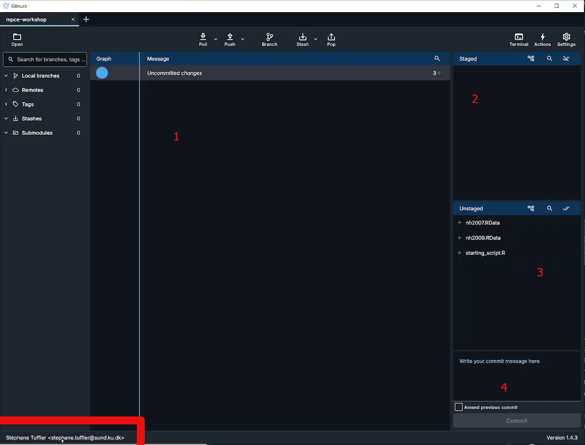
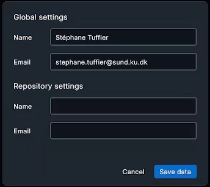
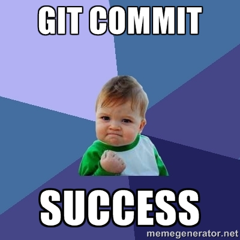
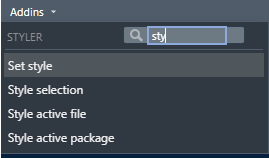
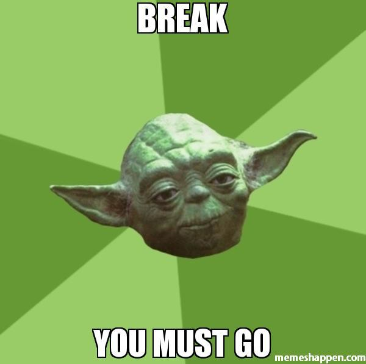

library(tidyverse)
setwd("C:/folder/nhanes-analysis/")
nh2007 <- load("C:/folder/nhanes-analysis/nh2007.Rdata")Hands-on Activity 1
Introduction
Goal
At the end of this exercise you should have a project folder created for the analysis. The folder should contains a git repository, a script/ folder containing the starting script (starting_script.R) and a R/ folder containing descriptive_stats.R with 3 functions.
Your Activity 1 Checklist
TipWhat You’ll Accomplish Today
Estimated total time: 40 minutes
→ You’ll have a clean, documented, version-controlled project!
Tasks
- Setup a reproducible project for the analysis (completed in pre-workshop)
- Use
styler::to improve the script - Make your first commit after styling
- Create three simple functions for descriptive statistics
Set up the project
This section needs to be done prior to the course time, in order to save time. We will only review it quickly during the course.
Progress: Section 1 of 3 | Time: 2 min
Your git and RStudio setup should already be complete from the pre-workshop instructions. Let’s quickly verify everything is ready.
You should have downloaded the dataset and the script for this workshop if you followed the pre-workshop instructions. If you didn’t, please go check them again and make sure that you already have git initialized:
- Git repository initialized in your project folder
- RStudio project created (
.Rprojfile) - Data files:
nh2007.Rdata,nh2009.Rdata - Script:
starting_script.R - Folder structure created:
data/,scripts/,R/
You should have downloaded the dataset and the script for this workshop if you followed the preworkshop instructions. If you didn’t please go check them again and make sure that you already have git installed:
If you wish to recreate the NHANES data by yourself, please have a look at the script in data-raw/nhanes.R in the workshop’s GitHub repository
The first step is to create a folder to gather all the project files. You can call it NHANES/, mpce-reproducibility/ or workshop/ it does not matter. Copy the files and move to this folder.
Next we should initialize git within the project folder.
Initialize git repository
To do that, we will use Gitnuro (see pre-workshop instructions). Open Gitnuro, click on Start a local repository and select the folder you just created above.
This will open the main widow where we can mange the git repository. The window shoul look like that:

The interface is divided in several parts:
- the main area which show two things:
- the history of the repository commit
- the content of a selected file with it’s modifications
- The staged ares which list the files in the staged area and ready to commit
- The unstaged area show the files in your working folder and unstaged
- The commit message where you have to enter the commit message before commiting (saving) the staged files
We can keep this windows open and we will return to it as we advance through the workshop and need to commit (save) modifications.
Before adding things, it’s a god idea to configure you credentials (especially if you are working within a team). Click on the bottom left to display the credential windows:

Here you can setup your User Name and Email both for the curent project (Repository) or for all git projects (Global).
Tip
You can also initialize a git repository directly when creating a new R Studio project.
Create a Rstudio project
Now let’s open RStudio to also initiate a R Studio project. Click on “New project” in the project menu on the top right corner. Then select “Project in existing directory” and indicate the path of the workshop folder. The project should open itself.
Each RStudio project can be configured. You can either click on the .Rproj file within RStudio or click on “Project option” in the “Tools” menu.
It’s usually better to turn off the saving of the workspace to .Rdata as this prevent old data from previous computations to be loaded automatically each time you open the project which can cause a lot of issues. It’s always better to rerun the scripts form scratch.
Adding folder and files
Now that we have setup both Git and RStudio, let’s organise the project by creating folders and files within the project folder.
- Folders:
data/: copy the two datasets nh2007 and nh2009 hereR/: keep the folder empty for nowscripts/: copystarting_script.Rhere
- Files:
README.md: create it at the root ot the project folder. You can open it in R Studio and add a very short description of the project.scripts/README.md, optional to add some information on the script we can find in this folder
.gitignore: create this file at the root of the project folder. It can contain a list of files that git should ignore. Open it in RStudio and add the following lines:
# History files
.Rhistory
.Rapp.history
# Session Data files
.RData
.RDataTmp
# User-specific files
.Ruserdata
# RStudio files
.Rproj.user/
# R Environment Variables
.Renviron
# R Specific file
.RdataThis will prevent git from following the modification of these files that are only temporary and not related to the analysis.
The folder should look like that:
Project
├── .git/ <-- Git repository stored here (eg data about changes), hidden folder
├── R/
├── data/
| ├── nh2007.Rdata
| └── nh2009.Rdata
scripts/
| ├──starting_script.R
| └── README.md
├── .gitignore
├── Project.Rproj
└── README.mdAll the steps above can be done within the command line or terminal, using git command line namely Git Bash.
cd your_project_folder
git init
# GIT bash
git config --global user.name "First Last"
git config --global user.email "first.last@example.comYou first commit
It’s time to save in Git the initial state of the project. Switch to the Gitnuro window. All the files and folders should appears in the unstage part of the windows. The script is no under the folder script/, we can see the README.md file and the .Rdata files are not appearing as we added them to the files to ignore.
You can click on any file to show their content. All the lines are green as we will only add new lines to the repository.
To commit the file, we have to put them in the staged area by clicking on “Stage” or “Stage all” in the unstaged area.
Prepare the commit by adding a commit message like: “Initial commit” or “Create project”. Then click on the commit button.
Congratulation all the modifications are now saved 🥳. We can see that a new line has appeared in the center, containing the details of this first commit.

Improve the script
Progress: Section 2 of 3 | Time: 15 min
You’ll now review, fix, and commit your analysis script. This section teaches why consistent code style matters for reproducibility.
Your goals this section: - Fix the data loading approach - Identify and fix code style issues - Make your 2nd commit - Understand why consistency matters
Loading the data
It’s time to look at the analysis script. You can try to make it run as it is.
The first 3 lines look like that:
ImportantExercise
Exercise: Can you spot the issue there? How can we improve the loading of the data within the project directory?
TipSolution
Since we have setup RStudio and we are working within a project and the working directory is the project folder. Therefore we can just specify the path to load the data as a relative path (e.g. path within the project):
load("data/nh2007.Rdata")This will work on any computer with the same project structure. Relative paths can also used for any files, including to source R scripts.
This is the core of reproducibility!
Script style
ImportantExercice
Question: What can you notice regarding the coding style used in the script?
- Is it consistent?
- Does it match the tidyverse style guidelines?
# ...
nh2007$id<-factor(nh2007$id)
nh2007$gender<-factor(nh2007$gender)
# ...
nh2007$asthma<- nh2007$asthma%in%1
nh2007$cancer<-nh2007$cancer%in%1
nh2007$cancer <- nh2007$cancer %in% 1
# ....
model.1a <- glm(asthma ~ barium + age_screening + gender,data=nh2007)
model.1.b <- glm(heart_failure ~ barium +age_screening+gender, data = nh2007)
model.1.c<-glm(coronary_heart_disease ~barium + age_screening + gender,data=nh2007)
lead2a <- glm(asthma~lead + age_screening + gender, data = nh2007)
TipSolution
We can notice:
- Inconsistent spacing in the formulas
- Variations in the names of the models
- General lack of comments
- A lot of copy pasting to repeat the same actions for many variables
First, we can use styler Rstudio addin to reformat the whole code. Look for the Addins menu in Rstudio toolbar and search for styler addon. Click on Style active file:

The code will look much better:
# ...
nh2007$id <- factor(nh2007$id)
nh2007$gender <- factor(nh2007$gender)
# ...
nh2007$asthma <- nh2007$asthma %in% 1
nh2007$heart_failure <- nh2007$heart_failure %in% 1
nh2007$coronary_heart_disease <- nh2007$coronary_heart_disease %in% 1
nh2007$heart_attack <- nh2007$heart_attack %in% 1
nh2007$stroke <- nh2007$stroke %in% 1
nh2007$chronic_bronchitis <- nh2007$chronic_bronchitis %in% 1
nh2007$cancer <- nh2007$cancer %in% 1
# ....
model.1a <- glm(asthma ~ barium + age_screening + gender, data = nh2007)
model.1.b <- glm(heart_failure ~ barium + age_screening + gender, data = nh2007)
model.1.c <- glm(coronary_heart_disease ~ barium + age_screening + gender, data = nh2007)
lead2a <- glm(asthma ~ lead + age_screening + gender, data = nh2007)Your code is now consistent and follows tidyverse style guidelines. Notice how much easier it is to read! This is why reproducible practices matter— others (and your future self) will thank you.
We can further change the models names to make them more consistent and informative:
model_barium_asthma <- glm(asthma ~ barium + age_screening + gender, data = nh2007)
model_barium_hf <- glm(heart_failure ~ barium + age_screening + gender, data = nh2007)
model_barium_chd <- glm(coronary_heart_disease ~ barium + age_screening + gender, data = nh2007)
model_lead_asthma <- glm(asthma ~ lead + age_screening + gender, data = nh2007)This step is actually optional as we will see how to avoid this in the second activity. Now the script should work and is cleaner. Instead of saving the script as a new one we can save the modifications in git: let’s do a second commit!
Important: Save your styled script now!
In Gitnuro:
- You should see
starting_script.Ras an unstaged file - Click on the file to see all your changes (green = additions, red = deletions)
- Stage all files
- Write a commit message:
"Apply tidyverse style guide"or"Clean up code formatting" - Click Commit
You now have 2 commits in your history!
Create a function
Let’s move on to the final step of this exercise. As we notice, many steps in this script are repetitives. This is probably fine for this small script, but not so much when you will have 1000+ lines to modify.
Form lines 41 to 76, the script is doing some simple summary statistics. We can create 3 functions to simplify theses lines:
- one function for the qualitative variables
- one function for the quantitative variables
- one function which will decide which function to apply.
Progress: Section 3 of 3 | Time: 20 min
Now you’ll create your first function!
Your goals this section:
- Write
compute_table()for categorical variables - Write
compute_numeric()for numeric variables - Write
compute_descriptive_stats()that uses both - Understand how functions reduce errors and save time
Question: Look at the provided R code. What patterns or repetitive tasks do you notice?
TipSolution
- Frequency tables and bar plots for factors and logical
- Means, standard deviations, quantiles, and histograms for numerical.
ImportantExercise
Exercise: Write a function to compute a frequency table with NA values included.
To find the steps that you need to put in the body of the function, you can first try to do a frequency table on one variable of the dataset. When it’s working, copy paste the steps in the function’s body and replace the variable names with variable instead. Before testing the function, you need to run the lines with the function definition to load the function in R memory.
# Testing the table function
table(nh2007$gender, useNA = "always")
compute_table <- function(variable) {
# Steps to do on variable
}
TipSolution
# Define the function
compute_table <- function(variable) {
# Return frequency table as a dataframe
table(variable, useNA = "always")
}
# Call the function with gender variable
compute_table(variable = nh2007$gender)First function created!
Your compute_table() function is working. You should see a frequency table with counts. This is the building block for your more complex functions!
Good we have the first function, created, let’s move to the second one!
ImportantExercise
Exercise: Create a similar function for numeric variables. The function need to return the mean, standard deviation, and quantiles.
TipSolution
compute_numeric <- function(variable) {
# Compute the statistics
mean_value <- mean(variable, na.rm = TRUE)
sd_value <- sd(variable, na.rm = TRUE)
quantiles <- quantile(variable, na.rm = TRUE)
# Return statistics, in a list
list(
"mean" = mean_value,
"sd" = sd_value,
"quantiles" = quantiles
)
}
# Test the function
compute_numeric(nh2007$age_screening)In this case, we need to return multiple results. To do so, all the results need to be regrouped in a list or a dataframe because functions can only return one object.
Your compute_numeric() function is working. Now you have a tool to analyze any numeric variable quickly. Imagine doing this analysis on 50 variables— functions save hours of work!
To join together the two functions, we need additional helpers. Within a function we can use logic operators to perform operations only when a statement is true. if (statement) {} is particularly useful to test variable type using one of the following code:
is.numeric(variable)
is.factor(variable)
is.logical(variable)
if (is.logical(nh2007$age_screening)) {compute_numeric(nh2007$age_screening) }
ImportantExercise
Exercise: Join together the two functions in another function that can handle both categorical and numerical variables.
TipSolution
compute_descriptive_stats <- function(variable) {
# Function to call if the variable is numeric
if (is.numeric(variable)) {
statistics <- compute_numeric(variable)
}
# Function to call if the variable is a factor or a logical
if (is.factor(variable) || is.logical(variable)) {
statistics <- compute_table(variable)
}
statistics
}
# Test the function
compute_descriptive_stats(nh2007$age_screening)
compute_descriptive_stats(nh2007$gender)Your compute_descriptive_stats() automatically chooses the right analysis for any variable type.
Now we can rewrite the previous lines like that:
compute_descriptive_stats(nh2007$gender)
compute_descriptive_stats(nh2007$education)
compute_descriptive_stats(nh2007$education_child)
compute_descriptive_stats(nh2007$asthma)
compute_descriptive_stats(nh2007$heart_failure)
compute_descriptive_stats(nh2007$coronary_heart_disease)
compute_descriptive_stats(nh2007$creatinine)
compute_descriptive_stats(nh2007$lead)
compute_descriptive_stats(nh2007$barium)
compute_descriptive_stats(nh2007$cadmium)Extending functions
Is quite easy to modify the functions we created and to add functions to do more sutff! For example, we can for each variable, create plots to describe the distribution of them using ggplot2.
The section below (Extending functions) is helpful but optional. If you’re short on time, you can skip directly to Before break. You already have the 3 core functions!
This new function creates plots for each type of variable: a histogram for the numeric variables and a barplot for the discrete variables.
# Descriptive univariate graphs
compute_descriptive_graph <- function(variable) {
# Histogram
if (is.numeric(variable)) {
p <- ggplot2::ggplot(mapping = aes(x = variable)) +
ggplot2::geom_histogram()
}
# Barplot
if (is.factor(variable) || is.logical(variable)) {
p <- ggplot2::ggplot(mapping = aes(x = variable)) +
ggplot2::geom_bar()
}
p
}
# Test the function
compute_descriptive_graph(nh2007$creatinine)
compute_descriptive_graph(nh2007$lead)
compute_descriptive_graph(nh2007$barium)
compute_descriptive_graph(nh2007$cadmium)The little p is needed at the end of the function to return the graph. If you remove it you will see that nothing will be returned. This is because a function returns the last output from its body.
You can add this function the starting script, and also update the lines 72-75:
hist(nh2007$creatinine)
hist(nh2007$lead)
hist(nh2007$barium)
hist(nh2007$cadmium)
# Replace by
compute_descriptive_graph(nh2007$creatinine)
compute_descriptive_graph(nh2007$lead)
compute_descriptive_graph(nh2007$barium)
compute_descriptive_graph(nh2007$cadmium)
ImportantExercise
Optionnal exercise: create a new descriptive statistics function that includes at least one additional calculation not covered previously.
Before break
Progress: Section 3 Complete! | Time: Final 5 min
Almost done! Now you’ll organize your code and make a final commit.
The starting_script.R is starting to be messy, with a mix of functions and lines to execute, we need to tidy that up! Move all the new functions (compute_table, compute_numeric, compute_descriptive_stats, compute_descriptive_graph) to a file in the R folder named “descriptive_stats.R”.
Add the following line at the top of starting_script.R to source all the function in R/descriptive_stats.R each time the script is run:
# As we are working in a project R studio, know where to look
source("R/descriptive_stats.R")
# A safer way is to use the `here` package
source(here::here("R/descriptive_stats.R"))Final commit of Activity 1!
In Gitnuro:
- You should see
starting_script.Rand a newR/descriptive_stats.Rfile - Stage all files
- Write a commit message:
"Create descriptive statistics functions"or"Refactor: separate functions from main script" - Click Commit
You now have 3 commits documenting your workflow!
Save the change in git by creating a commit with the newly created functions and modifications done in the starting script.
Note that we can clearly see which lines have been deleted or created by just clicking on a file!
🎉 Congratulations!
You’ve completed Activity 1!
What you accomplished:
- Organized your project folder for reproducibility
- Fixed code style using tidyverse guidelines
- Created 3 functions using the DRY principle
- Made 3 meaningful commits to git history
- Learned how version control documents your work
